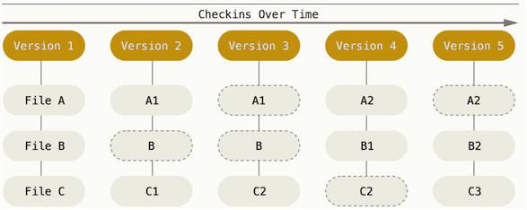
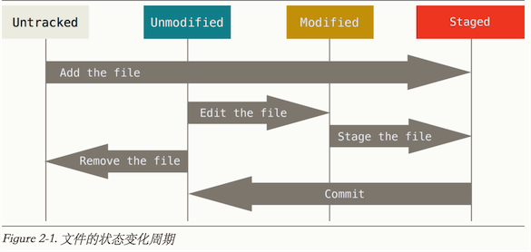
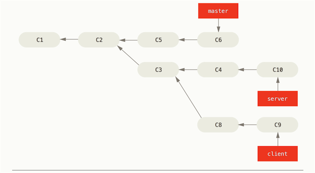

感谢相关翻译组,此文主要参考http://git-scm.com/book/zh/v2/%E8%B5%B7%E6%AD%A5-Git-%E5%9F%BA%E7%A1%80
1.起步
1.1 Git的优势
SVN和Git,因为SVN要是主机挂了.所有记录都GG了.而Git是分布式的.而且Git平台比较多,GitLab,coding.net,GitHub等等Git可以现在本地执行,可以在本地进行commit,而SVN每次commit都必须是提交到主机.(虽然笔者推荐多push,但是可以本地commit有时也是不错的,主要是保证本地能有备份)Git能保证数据完整性,Git中所有数据在存储前都计算校验和,然后以校验来引用,所以你在传送过程中丢失文件,Git都知道(笔者试过一个push断了4次,但是最后还是每次增量的提交了上去.)
1.2 Git和SVN存储方式的不同
SVN :

Git :

注意Git的存储图中,外面有间隔线的表明数据没有变化,存的只是索引.
SVN是差异比较,每个版本的文件依赖于上一个版本.
Git的每个版本的文件是独立存在的,是直接记录快照.
1.3 Git的三个工作区域和三种状态

三个工作区域 :
- 工作目录 : 我们从Git仓库提取出来的文件,正在本地修改的目录
- 暂存区域 : 是一个文件,保存下次将要提交的文件信息列表
- Git仓库 : 保存项目元数据和对象数据库的地方
三种状态:
- 已提交 : 如果Git仓库保存着特定版本文件,就属于已提交状态(commit)
- 已修改 : 自上一次取出来修改了,但还没放入暂存区(add)
- 已暂存 : 如果作了修改并放入暂存区域(add),就属于已暂存.

其实还有二种形式可分
- 未跟踪 : 在本地未
git add的就是未跟踪的. - 已跟踪 : 上述三种状态都是已跟踪状态.
以上状态都可以通过git status查看 or 紧凑一点的git status -s
1.4安装Git
//ubuntu
apt-get install git
其他版本系统 :http://git-scm.com/downloads
1.5 Git配置
- 全局系统配置 :
/etc/gitconfiggit config --system ... - 用户
~/.gitconfigor~/.config/git/configgit config --global ... - 当前项目 : ./git/config
一开始设置用户名和邮箱
$ git config --global user.name "404_K"
$ git config --global user.email 404_K@example.com
更改git编译器
git config --global core.editor 命令设定你喜欢的编辑软件
详情输入git config查看 or git help config
2. Git基础
2.1获取Git仓库
初始化仓库
- git init : 创建.git目录初始化git
- git add . 添加当前目录到git中.
- git commit -m "first commit" 放入暂存区中.
克隆现有仓库
git clone https://github.com/mzkmzk/Read.git [重命名本地目录]2.2 .gitignore
所有空行或者以 ＃ 开头的行都会被 Git 忽略。
可以使用标准的 glob 模式(简化的正则)匹配。
匹配模式可以以（/）开头防止递归。
匹配模式可以以（/）结尾指定目录。
要忽略指定模式以外的文件或目录，可以在模式前加上惊叹号（!）取反.
详细可参考https://github.com/github/gitignore
2.3 git diff
- git diff : 查看尚未暂存的文件更新了哪些部分,比较工作目录和暂存区的差异
- git diff --staged 查看已暂存的下次将要提交的.
2.4 git commit
- git commit : 进入编译器,里面包含更改信息
- git commit -m "内容" :直接提交内容,不进入编译器
- git commit -a : 提交所有已跟踪的文件,包括未add到缓存区的.(但不会提交未跟踪的)
2.4 git rm
要从Git移除文件,必须git rm 掉已跟踪文件,并且commit到缓存区.并且在工作目录中删除指定文件.
会有几种情况
- 删除之前修改过并且放到暂存区的话,则必须
git rm -f 文件强制删除.为了防止删除未add到缓存区的文件. - 当你想缓存区和仓库都删除了某目录,但工作区保留 :
git rm --cached 目录/
git rm 后面可跟glob
删除log下后缀为log的文件
git rm log/\*.log
为何要加\,因为不需要shell帮忙,git自行解析
git rm *~ ,所以~结尾的文件.
2.5 git mv
git mv README.md README
无论通过命名还是图形改名字,git都能检测出来
以上语句git会自动执行
mv README.md README
git rm RADME.md
git add README
2.6 git log
git log参数说明
| 选项 | 说明 |
|---|---|
| -p | 显示更新差异 |
| --stat | 显示修改统计信息 |
| --shortstat | 只显示--stat中最后的行数修改统计 |
| --name-only | 显示已修改文件清单 |
| --name-status | 显示新增,修改和删除的文件清单 |
| --abbrev-commit | 只显示SHA-1的前几个字符 |
| --relative-date | 使用较短的时间显示 |
| --graph | 图形显示分支合并历史 |
| --pretty | 使用自定义格式显示历史提交信息 |
git log 限制输出
| 选项 | 说明 |
|---|---|
| -n | 仅显示n条提交 |
| --after | 显示指定时间之后的提交 |
| --before | 显示指定时间之前的提交 |
| --author | 只显示该作者 |
| --committer | 只显示该提交者 |
| --grep | 显示关键字 |
| -S | 只显示添加/删除了某个关键字的提交 |
2.7 撤销操作
当你先commit了一次,后面发现少add了一些文件/commit的信息写错了
git commit -m "first" git add other.js git commit --amend当已经
commit但想撤回提交到缓冲区.git reset HEAD 文件名404-K:My_Website maizhikun$ git add . 404-K:My_Website maizhikun$ git status On branch master Your branch is ahead of 'origin/master' by 7 commits. (use "git push" to publish your local commits) Changes to be committed: (use "git reset HEAD <file>..." to unstage) modified: REAMDME.md 404-K:My_Website maizhikun$ git reset HEAD REAMDME.md Unstaged changes after reset: M REAMDME.md想撤销工作区间的操作,
git checkout -- README.md,注意这会把git仓库中的文件覆盖掉你本地的文件.
2.8 git remote
- git remote -v 可以看到当前远程仓库的名字和url
- git remote add <自定义远程仓库名称> url : 添加分支
- git fetch 自定义远程仓库名称 :把远程仓库名称对应的仓库拉下来
- git remote show 自定义远程仓库名称 可以查看指定远程仓库的信息
- git pull是抓取所有分支的更改下来
- git remote rename 更新后的仓库名称 需要更新名称的仓库
2.9 git tag
标签分为两种附注标签和轻量标签
- 附注标签 : 存储在git数据库中的一个完整对象,它们可以被校验,包含打标签者的名称,电子邮箱,日期,标注信息.
git tag -a v0.1 -m "tag message" - 轻量标签 :它是一个特定提交的引用,轻量标签本质上是讲提交校验和存储到一个文件中
git tag v0.1
查看标签信息 git show 版本号
如果后期追加标签
git tag -a v0.2 SHA-1码
共享标签
git push origin 标签名称
//or 提交多个标签
git push origin --tags
检出标签
git checkout -b 分支名称 标签名称
3 Git分支
3.1 分支新建与合并
git log --oneline --decorate可以查看分支父节点
创建新分支
git branch 分支名称
切换分支
git checkout 分支名称
删除分支
git branch -d 分支名称
合并分支
git merge 分支名称
查看当前分支和所有的分支
git branch
git branch -v //查看每个分支最后一次提交
git branch --merged/--no-merged
git branch --vv //查看设置所有跟踪的分支.
//显示合并/未合并到当前分支的分支
git pull 和 git fetch
大多数情况下,git pull = git fetch + git merge
git fetch从服务器上抓本地没有的数据,它不会修改工作目录的内容,它只会获取数据.建议多使用git fetch,何时merge应该自己使用.
删除远程分支:当远程分支的工作完成了,也就是你和其他作者已经完成了指定任务并且merge到master分支上,就可以删除远程分支
git push origin --delete 远程分支名称
3.6 变基
变基的作用是让开发线的注释会像串行一样显示,而非merge那样并行的显示.
合并分支,一般都使用merge或rebase
merge是指:当有两个分支分别改了代码,merge是把这两个分支和她们的共同祖节点进行合并,合并成新的分支.
rebase: 现在有两个并行的开发分支C3和C4,先把C4rebase到C3中,然后再到C3mergeC4,完成变基.
变基的玩法
一开始的情况

现在只想提交client到master,怎么办?.
$ git rebase --onto master server client
git checkout master
$ git merge client
完成目标.
变基的准则:不要对在你的仓库外有副本的分支执行变基
因为变基相当于丢弃现有的提交然后进行不同的提交,如果你已经把这个分支提交到仓库,别人抓了下来,你再向rebase修改,其他开发者必须和你进行合并修改.
4. 服务器上的Git协议
4.1 协议
git init --bare,可以生成一个空的仓库,初始化仓库时不会创建工作空间.
自行搭建git服务器建议gitlab<https://bitnami.com/stack/gitlab >,帮组文件<https://gitlab.com/gitlab-org/gitlab-ce/tree/master >
第三方git托管https://git.wiki.kernel.org/index.php/GitHosting
4.3 生成key
ssh-keygen通过设定以后,就会在~/.ssh发现公钥(.pub)和密钥了.
一般使用
ssh-keygen -t rsa -b 4096 -C "your_email@404mzk.com"
5. 分布式Git
5.2 向一个项目贡献
- 注意空白错误(行尾空格、Tab制表符、行首空格后跟Tab制表符的行为):
git diff --check找出这类错误
6. GitHub
6.2 对项目作出贡献
方法一:
- fork
- git clone下来自己刚fork的
- 在master新建分支
- 修改并push
- 在githu上提出合并请求
方法二:
- 在源版本
git remote add upstream 仓库名 - git fetch upstream
- git merge upstream/master
- 修改 push
7 Git工具
7.2 交互式缓存
作用: 修改一组文件后,把一个提交放到若干个提交
git add -i
What now> 5 staged unstaged path 1: +0/-1 +0/-1 trunk/grouplus-user/resources/assets/js/containers/InfluenceListInvitation.js Patch update>> *** Commands *** 1: status 2: update 3: revert 4: add untracked 5: patch 6: diff 7: quit 8: help会大概有这么些操作,如果只想改部分可以选择5,然后e,把不要提交的部分的+/-号去掉
7.6 重写历史
- 修改最近一次commit的消息
$ git commit --amend
7.7 重置
树 用途
HEAD 上一次提交的快照，下一次提交的父结点
Index 预期的下一次提交的快照
Working Directory 沙盒
查看HEAD
404-K:grouplus_front maizhikun$ git cat-file -p HEAD
tree 65c7a29302b4a9c19784472a5c7a69de8676df9c
parent 6527dc1391777b062aa3221fca59aefa89f19356
parent 7991a32b2e0f7f0d77a5dffcb1137270e561ec10
author Mai ZhiKun 1462779643 +0800
committer Mai ZhiKun 1462779643 +0800
fix both
$ git ls-tree -r HEAD
100644 blob a906cb2a4a904a152... README
100644 blob 8f94139338f9404f2... Rakefile
040000 tree 99f1a6d12cb4b6f19... lib
查看Index(下次准备push的)
git ls-files -s
重置命令 reset,原理
- 移动HEAD(若指定了 --soft，则到此停止）
- 更新索引(--mixed),HEAD指向当前快照内容更新索引.
- 更新工作目录(--hard)
checkout
- 改变HEAD
reset和checkout的危险性